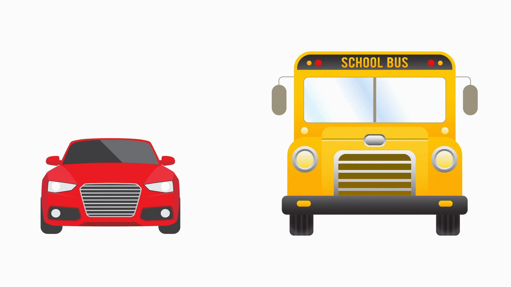

AI SURVEILLANCE WEB APP

This web application first detects the objects inside the source and then fetches the x, y coordinates along with the height and width. This allows it to draw a rectangle or square around the detetcted object.
NEXT